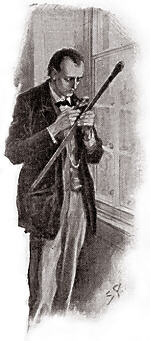

The Hound of the Baskervilles is the third of the crime novels written by Sir Arthur Conan Doyle featuring the detective Sherlock Holmes. Originally serialised in The Strand Magazine from August 1901 to April 1902, it is set largely on Dartmoor in Devon in England's West Country and tells the story of an attempted murder inspired by the legend of a fearsome, diabolical hound of supernatural origin. Sherlock Holmes and his companion Dr. Watson investigate the case.
The world is full of obvious things which nobody by any chance ever observes.
There's a pretty good case to be made that this is Holmes at his finest; in any case, it's a great introduction to the master detective and his faithful chronicler. The plot moves along at a good pace, the quality of the writing is excellent (even if Watson and Doyle are a bit wordy by today's standards), and none of the potential pitfalls that crop up elsewhere in the canon and might require parental intervention, from Mormon-bashing to drug use, is in evidence here. Holmes and Watson are well portrayed and have some classic, character-defining interactions. 
Read it! Remember - presume nothing